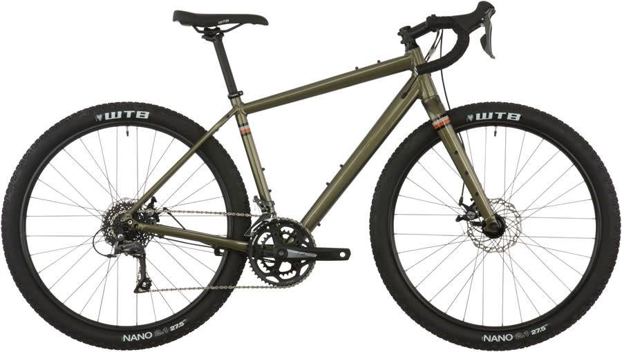
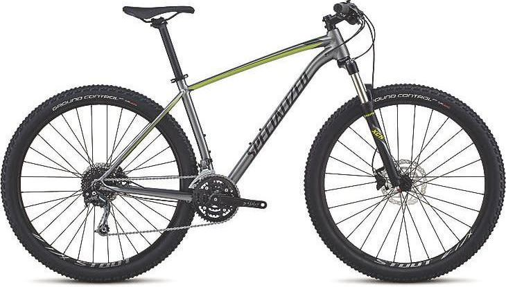
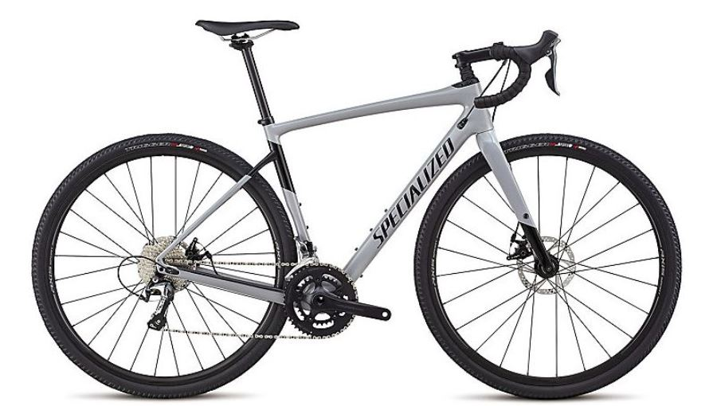

2018 SALSA JOURNEYMAN
CLARIS 650 DARK OLIVE
$899

FEATURES
All feature the ability to run wide, loose-surface-friendly tires; 700c x up to 50 mm or 27.5 x up to 2.25" tires. The frame accepts racks and fenders, or keep it stripped to the basics.
- 6061 butted aluminum frame
- Salsa Fantail alloy fork with rack, light, fender and Three-Pack mounts
- Toptube mounts for Salsa EXP Series Toptube Bag
- Three water bottle mounts per frame
- Fits tires up to 700c x 50 mm and 650b x 56.5 mm (27.5 x 2.2”)
- Frame Type: Rigid
- Fork Type: Rigid
- Wheel Size: 650b
- Frame Material: Aluminum
- Fork Material: Aluminum
- Front Axle: QR x 100mm
- Rear Axle: QR x 135mm
- Brake Type: Disc
2018 SPECIALIZED
ROCKHOPPER EXPERT
$925

FEATURES
The Rockhopper Expert is the perfect bike to begin your dive into the XC world. That's because we built it to be light, durable, and exceedingly capable, but how we did it is almost as fun as riding it. This Rockhopper comes spec'd with a mix of durable Shimano components, powerful Shimano hydraulic disc brakes, grippy Ground Control tires, and an SR Suntour XCR-Air fork with just the right amount of travel.
- The frame is constructed from lightweight A1 Aluminum in order to provide a compliant, durable platform to support our acclaimed XC Sport 29 Geometry. Combined, you get a bike that's more than efficient on climbs and descends with equal aplomb.
- SR Suntour XCR-Air fork features 80/90/100mm (size-specific) of suspension travel that swings well above its weight class.
- Shimano Deore rear derailleur provides crisp, reliable shifting that you can count on when the going gets rough. With it, you'll be able to precisely move through the wide gear range to make cruising the flats almost as easy climbing those hills.
SPECIALIZED DIVERGE
SPORT
$2,100

FEATURES
If you're like us, the last thing that you want is your bike holding you back from having the ride of your life. If you see rough roads or flowy singletrack, we want you to ride it. With the 2018 Specialized Diverge Sport Carbon Road Bike, you can. With it's newly designed frame, the Diverge is more capable than ever. The new frame will comfortably fit up to 700x42mm tires with plenty of room for mud, too. The FACT 9r carbon frame that's one of the lightest in the category.
- The FACT 9r carbon frame features an adventure-bound Open Road Geometry, Future Shock Progressive suspension with 20mm of travel, and front/rear thru-axles, making it the ultimate tool for your next adventure.
- At under 1,100g, the CAAD12 aluminum frame barely tips the scale
- The lightweight FACT carbon fork is plenty stiff, aiding in handling, rigidity, and an overall light weight.
- The Praxis Alba 2D is an incredibly stiff crankset with supreme ramping for precise shifts between the rings.
Bicycle information obtained from www.paradisegarage.com